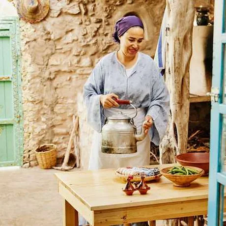
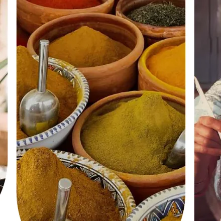
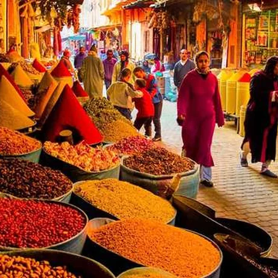
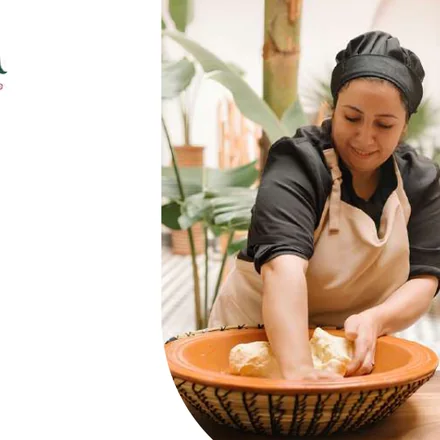
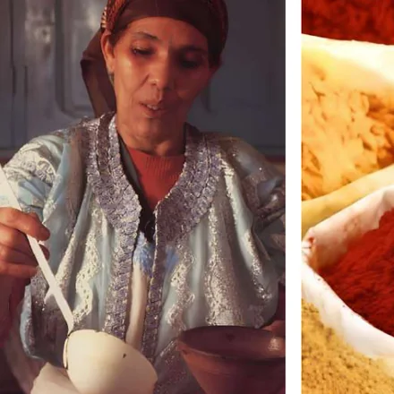

Le goût de la
maison, en ligne.
Une plateforme qui permet aux femmes marocaines de vendre leurs plats faits maison depuis chez elles — et aux clients de retrouver une cuisine de confiance.
Un savoir-faire sans
vitrine, une demande
sans adresse.
Le projet part d'un déséquilibre : d'un côté un savoir-faire culinaire transmis mais invisible, de l'autre des clients qui cherchent du fait maison sans canal fiable pour y accéder.
l'espace manque.
Les femmes marocaines possèdent un savoir-faire culinaire ancestral, mais n'ont ni les moyens ni l'espace d'ouvrir un commerce physique. Sans structure, ce talent ne se valorise pas.
Conséquences
- Revenus limités au bouche-à-oreille informel
- Aucune visibilité en dehors du cercle proche
- Aucune gestion structurée des commandes
- Dépendance financière qui persiste
le canal manque.
Les clients cherchent des plats authentiques, faits maison et sains, mais aucun canal fiable ne les propose. Les plateformes existantes ignorent la cuisine traditionnelle marocaine.
Conséquences
- Manque de confiance envers les cuisines inconnues
- Impossible de vérifier hygiène et ingrédients
- Plats industriels, sans authenticité
- Peu d'accès à une cuisine maison de qualité
Ce que le questionnaire
a fait remonter.
Dix questions posées à des consommateurs sur leurs habitudes de commande, leur rapport au fait maison et leurs freins. Cinq réponses ont cadré le produit.
Deux personnes, deux
peurs opposées.
Elle a peur de ne pas y arriver. Lui a peur de mal tomber. Toute l'interface se construit sur ces deux craintes.

Ce dont elle a besoin
- Un revenu depuis la maison, sans local ni capital
- Une plateforme simple, utilisable sur un téléphone basique
- Des repères clairs sur l'hygiène et les règles légales
- Recevoir les commandes et les paiements sans friction
Ce qui la freine
- Peur de la technologie et du paiement en ligne
- Peur des avis négatifs et de ne pas trouver de clients
- Méconnaissance des procédures légales

Ce dont il a besoin
- Trouver facilement des plats marocains faits maison
- Photos, avis et notes des cuisinières avant de commander
- Commander vite, être livré ou récupérer à proximité
- Un prix et un délai annoncés à l'avance
Ce qui le freine
- Doute sur l'hygiène et les conditions de préparation
- Peur que le plat ne corresponde pas aux photos
- Livraisons en retard
Cinq fonctions, une seule
promesse : la confiance.
Chaque fonctionnalité répond à une peur nommée plus haut — côté cuisinière ou côté client.
Profil cuisinière
Photo, spécialités, tarifs, disponibilités, bio et avis clients : la vitrine qui manquait.
Catalogue de plats
Menu interactif avec photos, ingrédients, prix et options — disponibilités en temps réel.
Système de commande
Commande en ligne, suivi en temps réel, notifications et créneaux de livraison ou de retrait.
Paiement sécurisé
En ligne ou à la livraison, portefeuille intégré, transactions protégées des deux côtés.
Système d'avis
Notes et commentaires vérifiés : la confiance se construit publiquement, pas sur parole.
Bilingue par défaut
Interface en français et en arabe : la cuisinière et le client n'ont pas la même langue d'usage.
Transformer un savoir-faire culinaire ancestral en autonomie financière réelle — sans local, sans capital, sans intermédiaire.
Un tagine, trois couleurs,
trois alphabets.
Logotype & fonds
Orange : chaleur, convivialité, appétit. Vert : naturel, confiance, authenticité. Jaune : épices, générosité, lumière.
Typographie
Les trois polices du projet sont libres : le poster utilise exactement celles de la charte, sans substitution.

Le nom. En darija, « dada » désigne affectueusement la femme qui cuisine pour les autres — une figure maternelle associée au savoir-faire et à la transmission des recettes.
La forme. Le tagine stylisé porte la calligraphie ; le jaune à l'intérieur figure les épices et la richesse des plats.
L'application et le site.
Une app pour les deux côtés du marché, et un site qui sert de vitrine. Vert et orange se répartissent les rôles : le vert accueille, l'orange déclenche l'action.


Le détail qui rassure
Sur l'accueil, la cuisinière est saluée par son prénom et son statut du jour est affiché en arabe comme en français. Pour Farah, qui hésite devant une nouvelle application, cette première ligne fait la différence entre « c'est pour moi » et « ce n'est pas pour moi ».

Ce qu'il reste à prouver.
Les pourcentages ci-dessus viennent du questionnaire, pas de l'usage : la plateforme n'est pas encore en ligne. Trois indicateurs diront si la promesse tient.
Les cuisinières vont-elles jusqu'au bout ?
Part des profils commencés qui sont publiés avec au moins un plat. C'est là que la peur de la technologie se mesure.
La confiance se construit-elle ?
Part des commandes suivies d'un avis vérifié, et délai avant la première commande répétée chez la même cuisinière.
La promesse de rapidité tient-elle ?
90 % des répondants attendent moins de 30 minutes : c'est l'engagement le plus exposé du produit.